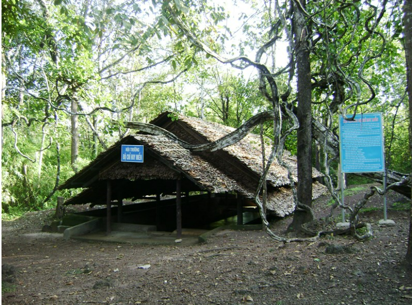
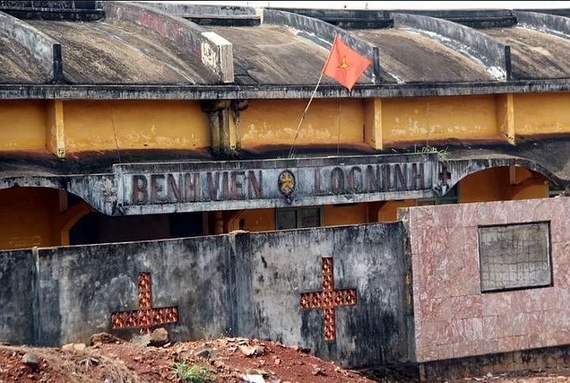
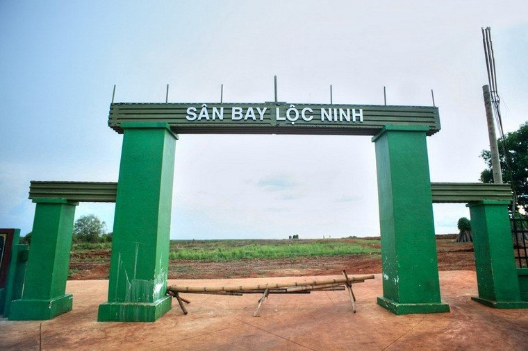

----- Nội dung -----
Tà Thiết

1. Căn cứ Bộ Chỉ huy Quân giải phóng miền Nam Việt Nam
Căn cứ được xây dựng từ năm 1973, là tổng thể hệ thống giao thông hào, hầm trú ẩn, hội trường
ngầm, nhà ở và làm việc của các đồng chí lãnh đạo cấp cao của Đảng. Hệ thống nhà, hầm, hào giao
thông được nối với nhau liên hoàn, bảo đảm sinh hoạt, làm việc thuận lợi, thông thoáng và an
toàn.
Bệnh viện Lộc Ninh

Bệnh viện Lộc Ninh là một di tích lịch sử - văn hoá do
Pháp chủ trương xây dựng trong khoảng thời gian Thập niên 1930 trên địa bàn Tỉnh Biên Hòa; nay thuộc phạm vi Lộc Ninh, Bình Phước, Việt Nam. Di tích này nay thuộc sự quản lý của Sở Văn hóa, Thể thao và Du lịch Tỉnh Bình Phước và được Ủy ban nhân
dân Tỉnh Bình Phước vào ngày 07 tháng 09 năm 2012.
Sân bay Quân sự Lộc Ninh

Là một sân bay thuộc sự quản lý của Quân đội Mỹ và
Quân lực Việt Nam Cộng Hòa được xây dựng nhằm mục đích quân sự sử dụng trong
Chiến tranh Việt Nam. Sau Trận Lộc Ninh, sân bay thuộc về Cộng hòa Miền Nam Việt Nam.
Sân bay nằm trên một khu đồi bằng phẳng được lắp ghép toàn bộ bằng những vỉ sắt (Tec-nich)
thay cho bê tông có diện tích trên 5.000 m2.
Năm 1986, sân bay được công nhận là di tích lịch sử cách mạng cấp quốc gia.
Đọc thêm
Khi đến những nơi này, sẽ cho ta thấy được một dấu tích quan trọng, nhìn được những nổ lực kiên cường, những toan tính hết sức cẩn thận, từng đường đi nước bước. Không chỉ là những vật hiện hữu mà nó còn là thứ linh thiên cao cả, mà khiến tất cả chúng ta ở thế hệ này phải kính cẩm nghiên đầu. Thế hệ tiếp theo, hãy xây dựng bản lĩnh, để mang đất nước "sánh vai với các cường quốc năm châu"